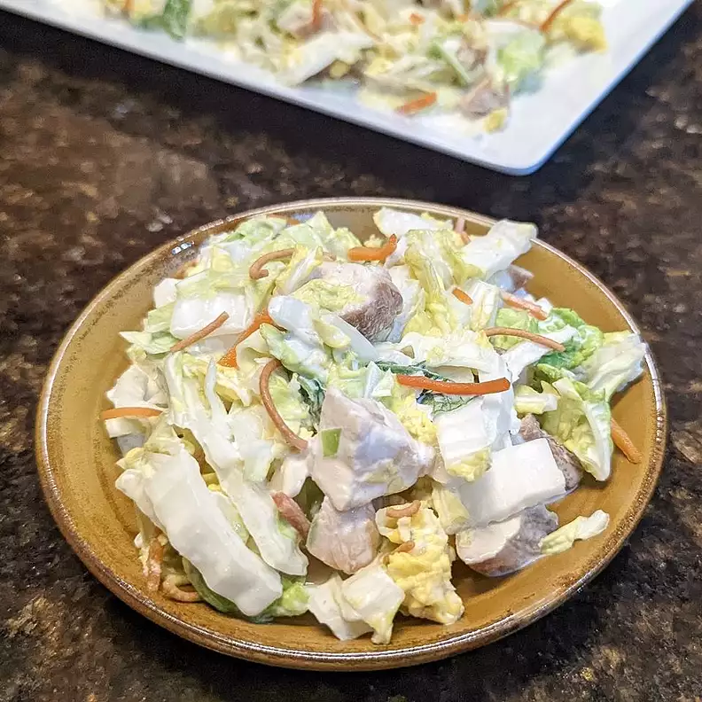

French Toast Sticks

Description
Flavorful and so delicious, this sesame chicken salad will wow you!
Ingredients
- 4 (4 ounce) skinless, boneless chicken breast halves
- ¼ cup soy sauce
- 2 tablespoons brown sugar
- 1 teaspoon minced fresh garlic
- ½ teaspoon grated fresh ginger
- 1 cup mayonnaise
- 1 tablespoon sesame oil
- 1 tablespoon white sugar
- ½ teaspoon grated fresh ginger
- 1 tablespoon sesame seeds
- 1 medium head napa cabbage, thinly sliced
- 1 medium carrot, shredded
- ½ cup crispy fried rice noodles
Steps
- Mix eggs, milk, butter, vanilla extract, and cinnamon together in a bowl.
- Line an air fryer basket with parchment paper.
- Dip each piece of bread into the milk mixture and place in the basket. Make sure they are not touching; cook in batches if necessary.
- Preheat the air fryer to 370 degrees F (188 degrees C).
- Add basket and cook bread for 6 minutes; flip and cook for 3 minutes more
- Sprinkle each stick with confectioners' sugar.